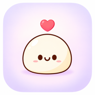

すわっち
優しく柔らかく、親しみやすい癒やし系。

すわっちすわっちのコンセプト
選べる、わたしのAIパートナー
すわっち、しおり、みけ、レイ。見た目と話し方の違う4人から、自分に合うパートナーを選べます。
優しく柔らかく、親しみやすい癒やし系。
明るく上品で、堅すぎないAI秘書。
親しみやすく、少しくだけた猫型AI。
落ち着いた上品な敬語のAI執事。
AIが参照するのは、ご本人の設定や許可された履歴、会社が正式に登録した理念・ルールなど、サービス内で定めた範囲です。何でも無制限に記憶するものではありません。
音声会話オプション
社長もスタッフも利用できる音声会話オプションを提供予定です。
まずは毎日の小さなことから
自分だけの日常メモ
仕事の予定はもちろん、「帰りに豆腐を買う」「明日ゴミを出す」など、日常の用事も本人専用のメモとして残せます。
社長やほかのスタッフ、会社の共有一覧には表示されません。おしゃべり・疑問・相談
ちょっとした疑問やおしゃべり、気持ちの相談まで、カテゴリーを選ばずに話せます。
「覚えておいて」と頼んだ場合も、内容を確認して「登録する」を押すまでは保存しません。仕事を共有
引き継ぎ、担当、期限、完了状況を同じ会社のみんなで確認できます。社長だけでなく、スタッフも登録できます。
自分だけのメモや通常相談とは、はっきり分けて管理します。職場の悩みも、必要なときに
日常のちょっとしたことから、職場の仕事や人間関係の悩みまで、気になることを何でも相談できます。経営者にも本人専用の相談場所があります。
あなたの会社の社長に
あなたが明示的に社長へ送ったヘルプと、仕事用の「みんなのやること」は見えます。
通常のAI相談本文、AIだけに相談した内容、「わたしのやること」の本文はそのまま見えません。
ヘルプの利用回数・カテゴリ・緊急度・本文は、職場傾向や週次レポートに入りません。
登録不要・保存なし
架空会社「こもれび商店」の体験用デモです。本番Supabase、AI API、実際の相談データには接続しません。
「帰りに豆腐を買うのを覚えておいて」
緊急度を選んでも自動通知や即時対応は行いません。差し迫った危険には110・119などを利用してください。
本人が希望したときだけミッション案を作り、社長または承認管理者の承認後に公開されます。
使い終わった道具を元の場所へ戻します。ランキングやノルマではありません。
良い行動を見つけたら、仲間へ感謝ポイントを贈れます。受取人には送り主が表示されません。
参加や人事評価への扱いは会社の運用ルールも確認してください。アプリがポイント数だけで人事評価を自動決定することはありません。
本人が必要なときだけ、相談先を選び、送信前に内容を確認してから助けを求められます。
会社を少しずつ良くするための前向きな取り組みです。強制的な達成報告や仕事のノルマではありません。
仲間の良い行動へ感謝を贈れます。ランキングではなく、送り主も受取人の画面には表示されません。
安心ガイド
ありません。ブラウザから利用できます。スマートフォンのホーム画面への追加は任意です。
通常相談の本文が社長や同僚へそのまま表示されることはありません。会社向けの傾向表示には、個人を推測しにくくする公開条件があります。
「わたしのやること」は本人専用です。社長、ほかのスタッフ、運営者にも本文は表示されません。
会社の設定で許可された相談項目では、匿名の一次相談を選べます。ただし、文章や出来事の内容から本人が推測される可能性があります。送信前に内容と相手を確認してください。
ブラウザから開ける時間であれば利用できます。勤務時間外の利用を強制する機能や、外部通知を強制する機能はありません。職場のルールと無理のない範囲で利用してください。
アプリ上は、強制参加や強制的な達成報告を求める仕組みではありません。会社独自の運用がある場合は、その案内も確認してください。
アプリがポイント数だけで人事評価を自動決定することはありません。会社での扱いが気になる場合は、導入時の運用ルールを確認してください。
相談、個人メモ、ヘルプ、ミッション提案、ポイント送信は必要なときに使う機能です。使わなかったことだけを理由にアプリが評価を下げることはありません。